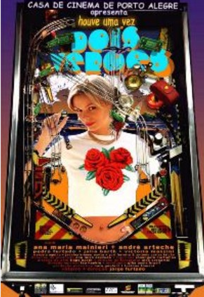

Caetano Veloso programa DOIS VERÕES no Espaço Unibanco
Caetano Veloso escolhe os filmes, e o Espaço Unibanco de Cinema monta a programação. É o ciclo Carta Branca, evento promovido em parceria com a Folha e que estrou dia 15 de maio em São Paulo. O compositor baiano é o primeiro convidado desse projeto semestral, no qual uma personalidade terá seus filmes favoritos transformados em uma mostra na capital paulista.
Caetano esteve no Espaço Unibanco no dia 15, às 20h, para apresentar "As Grandes Manobras", filme de 1955 do francês René Clair escolhido para abrir seu ciclo, que inclui ainda clássicos nacionais e internacionais, como "Terra em Transe", de Glauber Rocha, "O Bandido da Luz Vermelha", de Rogério Sganzerla, "Noites de Cabíria", de Federico Fellini, e "Passageiro Profissão: Repórter", de Michelangelo Antonioni; e filmes recentes, como "Brown Bunny", de Vincent Gallo, e "Houve uma Vez Dois Verões", produção da Casa de CInema de Portro Alegre dirigida por Jorge Furtado.
A programação completa da mostra inclui:
18/05 (sexta-feira)
18h - Terra em Transe. Direção: Glauber Rocha (Brasil, 1967). 14 anos. Elenco: Jardel Filho, Paulo Autran e Glauce Rocha. Sinopse: Paulo é um jornalista que tenta mudar a situação ao planejar a ascensão de um candidato supostamente oposicionista chamado Vieira, buscando o apoio do maior empresário do país para deter o avanço de uma multinacional estrangeira sobre o capital do país. Tudo começou bem; porém, problemas sociais e a corrupção arruinaram sua intenção.
20h - As Grandes Manobras. Direção René Clair, com Brigitte Bardot, Gerard Philippe e Jean Dessailly.
Dia 19/05 (sábado)
18h - Passageiro: Profissão Repórter (Profissione: Reporter). Exibição digital. Direção: Michelangelo Antonioni (França/Itália/EUA/Espanha, 1975). 14 anos. Elenco: Jack Nicholson e Maria Schneider. Sinopse: Fugindo da entediante rotina de vida, jornalista aproveita-se da morte inesperada de um desconhecido e assume a identidade do morto. Mais do que isso, acaba criando uma personalidade própria e envolvendo-se num caminho sem saída: o contrabando de armas que sustenta a guerrilha na África.
20h - The Brown Bunny. Exibição digital. Direção: Vincent Gallo (EUA, 2003). 18 anos. Elenco: Vincent Gallo e Chloe Sevigny. Sinopse: Um piloto inicia uma viagem com a meta de esquecer as lembranças da mulher que amou.
Dia 20/05 (domingo)
18h - O Bandido da Luz Vermelha. Direção: Rogério Sganzerla (Brasil, 1968). 18 anos. Elenco: Paulo Villaça, Helena Ignez e Luiz Linhares. Sinopse: "Jorge", um assaltante de residências de São Paulo, apelidado pela imprensa de "Bandido da Luz Vermelha", desconcerta a polícia ao utilizar técnicas peculiares de ação. Sempre auxiliado por uma lanterna vermelha, ele possui as vítimas, tem longos diálogos com elas e protagoniza fugas ousadas para depois gastar o fruto do roubo de maneira extravagante.
20h - Noites de Cabíria (Le Notti del Cabiria). Exibição digital. Direção: Federico Fellini (EUA/Itália, 1957). Livre. Elenco: Giulietta Masina e Aldo Silvani. Sinospe: Cabíria é uma prostituta baixinha e elétrica que vaga pelas ruas de Roma, procurando um verdadeiro amor, mas sempre se decepcionando. Após ter tentado tudo, inclusive ajuda divina, ela acha seu pretendente dos sonhos no local e hora mais inapropriados. Mas, seria ele tão perfeito assim?
Dia 21/05 (segunda-feira)
18h - Filme de Amor. Direção: Júlio Bressane (Brasil, 2004). 18 anos. Elenco: Fernando Eiras, Bel Garcia e Josi Antello. Sinopse: Três amigos se encontram em um pequeno apartamento em um fim de semana.
20h - A Fortaleza Escondida (The Hidden Fortress). Exibição digital. Direção: Akira Kusosawa (Japão, 1958). 14 anos. Elenco: Toshiro Mifune, Monoru Chiaki e Kamatari Fujiwara. Sinopse: Ambientado no século XVI no Japão, um solitário Samurai escolta uma jovem princesa fugitiva através do território inimigo.
Dia 22/05 (terça-feira)
18h - Houve uma Vez Dois Verões. Direção: Jorge Furtado (Brasil, 2002). 16 anos. Elenco: Ana Maria Mainieri, André Arteche, Pedro Furtado e Júlia Barth. Sinopse: Um garoto ingênuo que acredita que encontrará seu grande amor e uma garota que só pensa em dinheiro se encontram e vivem uma intensa paixão.
20h - Sansão e Dalila (Samson and Delilah). Exibição digital. Direção: Cecil B. DeMille (EUA, 1949). 10 anos. Elenco: Victor Mature e Angela Lansbury. Sinopse: Sansão fica furioso quando o pai de sua noiva dá a mão dela para outro homem, lhe oferecendo a de Dalila, a filha mais nova. Sentindo-se rejeitada, ela arquiteta um plano para destruir a força de Sansão.
Dia 23/05 (quarta-feira)
18h - Nazarin. Exibição digital. Direção: Luis Buñuel (México, 1958). 14 anos. Elenco: Francisco Rabal. Sinopse: Uma variação inteligente do tema Dom Quixote, aplicado a religião e hipocrisia. Trata-se da expulsão de um padre de sua igreja por dar proteção a uma prostituta.
20h - A Lei do Desejo (La Ley del Deseo). Exibição digital. Direção: Pedro Almodóvar (Espanha, 1986), 18 anos. Elenco: Antonio Banderas, Carmen Maura e Eusébio Poncela. Sinopse: O filme conta a história de Pablo, um diretor de teatro homossexual que se envolve com um assassino enquanto cria uma peça para ser estrelada por Tina, sua irmã transexual que mudou de sexo para manter um caso incestuoso com o pai.
Dia 24/05 (quinta-feira)
18h - Matou a Família e Foi ao Cinema. Direção: Júlio Bressane (Brasil, 1969). 18 anos. Elenco: Renata Sorrah, Antero de Oliveira e Márcia Rodrigues. Sinopse: Várias histórias sobre assassinatos intercalados nesse cultuado filme do Cinema Marginal. Entre as histórias está a de um rapaz de classe média baixa no Rio de Janeiro, que mata os pais a navalhadas e vai ao cinema ver Perdidos de Amor.
20h - Hitler no III Mundo. Exibição digital. Direção: José Agripino de Paula (Brasil, 1968). 14 anos. Elenco: Jô Soares, José Ramalho e Eugênio Kusnet.
Espaço Unibanco de Cinema - Rua Augusta, 1475

Cartaz do Filme